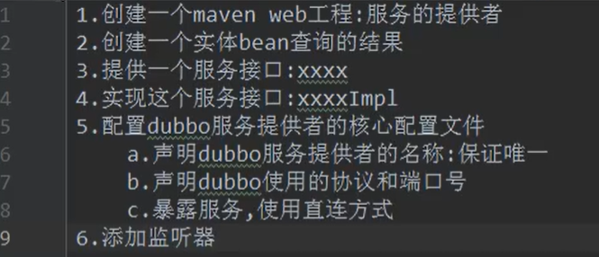

创建服务的提供者

创建Maven工程，模板为web工程
工程名为 ：001-link-userservice-provider
添加依赖
<?xml version="1.0" encoding="UTF-8"?>
<project xmlns="http://maven.apache.org/POM/4.0.0" xmlns:xsi="http://www.w3.org/2001/XMLSchema-instance"
xsi:schemaLocation="http://maven.apache.org/POM/4.0.0 http://maven.apache.org/xsd/maven-4.0.0.xsd">
<modelVersion>4.0.0</modelVersion>
<groupId>org.example</groupId>
<artifactId>link_provider</artifactId>
<version>1.0-SNAPSHOT</version>
<packaging>war</packaging>
<dependencies>
<dependency>
<groupId>org.springframework</groupId>
<artifactId>spring-context</artifactId>
<version>4.3.16.RELEASE</version>
</dependency>
<dependency>
<groupId>org.springframework</groupId>
<artifactId>spring-webmvc</artifactId>
<version>4.3.16.RELEASE</version>
</dependency>
<!--dubbo依赖-->
<dependency>
<groupId>org.apache.dubbo</groupId>
<artifactId>dubbo</artifactId>
<version>2.7.8</version>
</dependency>
<dependency>
<groupId>org.apache.curator</groupId>
<artifactId>curator-framework</artifactId>
<version>2.8.0</version>
</dependency>
<dependency>
<groupId>org.apache.curator</groupId>
<artifactId>curator-recipes</artifactId>
<version>2.8.0</version>
</dependency>
<dependency>
<groupId>junit</groupId>
<artifactId>junit</artifactId>
<version>4.8.2</version>
<scope>compile</scope>
</dependency>
</dependencies>
<build>
<plugins>
<!--JDK1.8编译插件-->
<plugin>
<artifactId>maven-compiler-plugin</artifactId>
<version>3.1</version>
<configuration>
<source>1.8</source>
<target>1.8</target>
</configuration>
</plugin>
</plugins>
</build>
</project>
mvnrepository.com(浏览器可以搜索到：Maven中央仓库)
插件
<build>
<plugins>
<!--JDK1.8编译插件-->
<plugin>
<artifactId>maven-compiler-plugin</artifactId>
<version>3.1</version>
<configuration>
<source>1.8</source>
<target>1.8</target>
</configuration>
</plugin>
</plugins>
</build>
编写服务
创建一个service接口，并创建该接口的实现类。
将服务暴露出去（在Spring配置文件）
dubbo-userservice-provider.xml
<?xml version="1.0" encoding="UTF-8"?>
<beans xmlns="http://www.springframework.org/schema/beans"
xmlns:xsi="http://www.w3.org/2001/XMLSchema-instance"
xmlns:dubbo="http://dubbo.apache.org/schema/dubbo"
xsi:schemaLocation="http://www.springframework.org/schema/beans http://www.springframework.org/schema/beans/spring-beans.xsd http://dubbo.apache.org/schema/dubbo http://dubbo.apache.org/schema/dubbo/dubbo.xsd">
<!--服务提供者声明名称：必须保证服务名称的唯一性，它的名称是dubbo内部使用的唯一标识-->
<!--使用 http://dubbo.apache.org/schema/dubbo-->
<dubbo:application name="link-provider"/>
<!--全局超时配置-->
<dubbo:provider timeout="5000" />
<!--访问服务协议的名称及端口号，dubbo官方使用的是dubbo协议，dubbo协议默认端口号为20880-->
<!--
name:指定协议的名称
port:制定协议的端口号（默认为20880）
-->
<dubbo:protocol name="dubbo" port="20880"/>
<!--
暴露服务接口->dubbo:service
interface:服务接口的全限定名称
ref:引用该接口的实现类
registry:如果设置为不使用注册中心，则值为N/A
-->
<dubbo:service interface="com.service.UserService" ref="userService" registry="N/A"/>
<!--将接口的实现类加载到spring容器中-->
<bean id="userService" class="com.service.impl.UserServiceImpl"/>
</beans>
标签 | 用途 | 解释 | |
<dubbo:service/> | 服务配置 | 用于暴露一个服务，定义服务的元信息，一个服务可以用多个协议暴露，一个服务也可以注册到多个注册中心 | |
引用配置 | 用于创建一个远程服务代理，一个引用可以指向多个注册中心 | ||
<dubbo:protocol/> | 协议配置 | 用于配置提供服务的协议信息，协议由提供方指定，消费方被动接受 | |
<dubbo:application/> | 应用配置 | 用于配置当前应用信息，不管该应用是提供者还是消费者 | |
<dubbo:module/> | 模块配置 | 用于配置当前模块信息，可选 | |
<dubbo:registry/> | 注册中心配置 | 用于配置连接注册中心相关信息 | |
<dubbo:monitor/> | 监控中心配置 | 用于配置连接监控中心相关信息，可选 | |
<dubbo:provider/> | 提供方配置 | 当 ProtocolConfig 和 ServiceConfig 某属性没有配置时，采用此缺省值，可选 | |
<dubbo:consumer/> | 消费方配置 | 当 ReferenceConfig 某属性没有配置时，采用此缺省值，可选 | |
<dubbo:method/> | 方法配置 | 用于 ServiceConfig 和 ReferenceConfig 指定方法级的配置信息 | |
<dubbo:argument/> | 参数配置 | 用于指定方法参数配置 |
在web.xml设置监听器，目的是启用服务
<context-param>
<param-name>contextConfigLocation</param-name>
<param-value>classpath:dubbo-userservice-provider.xml</param-value>
</context-param>
<listener>
<listener-class>org.springframework.web.context.ContextLoaderListener</listener-class>
</listener>
设置Tomact，发布
HTTP port 设置为：8081；
JMX port 设置为 ：1098；
创建服务的消费者

创建一个Maven工程，模板为web
将001-link-userservice-provider（服务的提供者）打成一个jar包，并在link_consumer的pom.xml文件中添加该依赖

默认就是jar包，所以注释掉就可以了。
打包完成后，去掉注释。
添加依赖
<?xml version="1.0" encoding="UTF-8"?>
<project xmlns="http://maven.apache.org/POM/4.0.0" xmlns:xsi="http://www.w3.org/2001/XMLSchema-instance"
xsi:schemaLocation="http://maven.apache.org/POM/4.0.0 http://maven.apache.org/xsd/maven-4.0.0.xsd">
<modelVersion>4.0.0</modelVersion>
<groupId>org.example</groupId>
<artifactId>link_consumer</artifactId>
<version>1.0-SNAPSHOT</version>
<packaging>war</packaging>
<dependencies>
<!--Spring依赖-->
<dependency>
<groupId>org.springframework</groupId>
<artifactId>spring-context</artifactId>
<version>4.3.16.RELEASE</version>
</dependency>
<!--SpringMVC 依赖-->
<dependency>
<groupId>org.springframework</groupId>
<artifactId>spring-webmvc</artifactId>
<version>4.3.16.RELEASE</version>
</dependency>
<!--dubbo依赖-->
<dependency>
<groupId>org.apache.dubbo</groupId>
<artifactId>dubbo</artifactId>
<version>2.7.8</version>
</dependency>
<!--依赖服务的提供者（link_provider）-->
<dependency>
<groupId>org.example</groupId>
<artifactId>link_provider</artifactId>
<version>1.0-SNAPSHOT</version>
</dependency>
<dependency>
<groupId>org.apache.curator</groupId>
<artifactId>curator-framework</artifactId>
<version>2.8.0</version>
</dependency>
<dependency>
<groupId>org.apache.curator</groupId>
<artifactId>curator-recipes</artifactId>
<version>2.8.0</version>
</dependency>
</dependencies>
</project>
在resources目录创建核心配置文件
dubbo-userservice-consumer.xml（spring配置文件）
<?xml version="1.0" encoding="UTF-8"?>
<beans xmlns="http://www.springframework.org/schema/beans"
xmlns:xsi="http://www.w3.org/2001/XMLSchema-instance"
xmlns:dubbo="http://dubbo.apache.org/schema/dubbo"
xsi:schemaLocation="http://www.springframework.org/schema/beans http://www.springframework.org/schema/beans/spring-beans.xsd http://dubbo.apache.org/schema/dubbo http://dubbo.apache.org/schema/dubbo/dubbo.xsd ">
<!--声明服务提供者的名称：保证唯一性-->
<dubbo:application name="link-consumer"/>
<!--全局超时配置-->
<dubbo:consumer timeout="5000" />
<!--引用远程服务接口：
id：远程服务接口对象的名称
interface：调用远程接口的全限定类名
url：访问服务接口的地址
registry：不使用注册中心，值为：N/A
-->
<dubbo:reference id="userService"
interface="com.service.UserService"
url="dubbo://127.0.0.1:20880"
registry="N/A"/>
</beans>
配置SpringMVC的配置文件
<?xml version="1.0" encoding="UTF-8"?>
<!--SpringMVC配置文件-->
<beans xmlns="http://www.springframework.org/schema/beans"
xmlns:xsi="http://www.w3.org/2001/XMLSchema-instance"
xmlns:context="http://www.springframework.org/schema/context"
xmlns:mvc="http://www.springframework.org/schema/mvc"
xsi:schemaLocation="http://www.springframework.org/schema/beans http://www.springframework.org/schema/beans/spring-beans.xsd http://www.springframework.org/schema/context http://www.springframework.org/schema/context/spring-context.xsd http://www.springframework.org/schema/cache http://www.springframework.org/schema/cache/spring-cache.xsd http://www.springframework.org/schema/mvc http://www.springframework.org/schema/mvc/spring-mvc.xsd">
<!--扫描组件-->
<context:component-scan base-package="com.web"/>
<!--配置注解驱动-->
<mvc:annotation-driven/>
<!--配置视图解析器-->
<bean class="org.springframework.web.servlet.view.InternalResourceViewResolver">
<property name="prefix" value="/"/>
<property name="suffix" value=".jsp"/>
</bean>
</beans>
在web.xml设置中央调度器
<?xml version="1.0" encoding="UTF-8"?>
<web-app xmlns="http://xmlns.jcp.org/xml/ns/javaee"
xmlns:xsi="http://www.w3.org/2001/XMLSchema-instance"
xsi:schemaLocation="http://xmlns.jcp.org/xml/ns/javaee http://xmlns.jcp.org/xml/ns/javaee/web-app_3_1.xsd"
version="3.1">
<!--设置监听器，启动Spring容器-->
<context-param>
<param-name>contextConfigLocation</param-name>
<param-value>classpath:dubbo-userservice-consumer.xml</param-value>
</context-param>
<listener>
<listener-class>org.springframework.web.context.ContextLoaderListener</listener-class>
</listener>
<!--配置中央控制器-->
<servlet>
<servlet-name>myweb</servlet-name>
<servlet-class>org.springframework.web.servlet.DispatcherServlet</servlet-class>
<init-param>
<param-name>contextConfigLocation</param-name>
<param-value>classpath:application.xml</param-value>
</init-param>
<load-on-startup>1</load-on-startup>
</servlet>
<servlet-mapping>
<servlet-name>myweb</servlet-name>
<url-pattern>/</url-pattern>
</servlet-mapping>
</web-app>
实体类实现序列化
public class User implements Serializable{
}
配置完成之后一直出错：
消费者报错日志：
24-Jul-2021 21:51:49.881 淇℃伅 [Catalina-utility-2] org.apache.catalina.core.ApplicationContext.log Closing Spring root WebApplicationContext
24-Jul-2021 21:51:52.911 淇℃伅 [Catalina-utility-2] org.apache.catalina.core.ApplicationContext.log No Spring WebApplicationInitializer types detected on classpath
24-Jul-2021 21:51:53.137 淇℃伅 [Catalina-utility-2] org.apache.catalina.core.ApplicationContext.log Initializing Spring root WebApplicationContext
24-Jul-2021 21:51:54.126 淇℃伅 [RMI TCP Connection(3)-127.0.0.1] org.apache.catalina.core.ApplicationContext.log No Spring WebApplicationInitializer types detected on classpath
24-Jul-2021 21:51:54.402 淇℃伅 [RMI TCP Connection(3)-127.0.0.1] org.apache.catalina.core.ApplicationContext.log Initializing Spring root WebApplicationContext
24-Jul-2021 21:51:54.948 涓ラ噸 [Catalina-utility-2] org.apache.catalina.core.StandardContext.listenerStart 寮傚父灏嗕笂涓嬫枃鍒濆鍖栦簨浠跺彂閫佸埌绫荤殑渚﹀惉鍣ㄥ疄渚�.[org.springframework.web.context.ContextLoaderListener]
com.alibaba.dubbo.rpc.RpcException: Fail to start server(url: dubbo://192.168.1.7:20881/com.service.UserService?anyhost=true&application=link-provider&bind.ip=192.168.1.7&bind.port=20881&channel.readonly.sent=true&codec=dubbo&default.timeout=5000&dubbo=2.6.2&generic=false&heartbeat=60000&interface=com.service.UserService&methods=queryUser&pid=31620&side=provider×tamp=1627134714531) Failed to bind NettyServer on /192.168.1.7:20881, cause: Failed to bind to: /0.0.0.0:20881
at com.alibaba.dubbo.rpc.protocol.dubbo.DubboProtocol.createServer(DubboProtocol.java:286)
at com.alibaba.dubbo.rpc.protocol.dubbo.DubboProtocol.openServer(DubboProtocol.java:263)
at com.alibaba.dubbo.rpc.protocol.dubbo.DubboProtocol.export(DubboProtocol.java:250)
at com.alibaba.dubbo.rpc.protocol.ProtocolFilterWrapper.export(ProtocolFilterWrapper.java:100)
at com.alibaba.dubbo.rpc.protocol.ProtocolListenerWrapper.export(ProtocolListenerWrapper.java:57)
at com.alibaba.dubbo.qos.protocol.QosProtocolWrapper.export(QosProtocolWrapper.java:56)
at com.alibaba.dubbo.rpc.Protocol$Adaptive.export(Protocol$Adaptive.java)
at com.alibaba.dubbo.config.ServiceConfig.doExportUrlsFor1Protocol(ServiceConfig.java:513)
at com.alibaba.dubbo.config.ServiceConfig.doExportUrls(ServiceConfig.java:358)
at com.alibaba.dubbo.config.ServiceConfig.doExport(ServiceConfig.java:317)
at com.alibaba.dubbo.config.ServiceConfig.export(ServiceConfig.java:216)
at com.alibaba.dubbo.config.spring.ServiceBean.onApplicationEvent(ServiceBean.java:123)
at com.alibaba.dubbo.config.spring.ServiceBean.onApplicationEvent(ServiceBean.java:49)
at org.springframework.context.event.SimpleApplicationEventMulticaster.doInvokeListener(SimpleApplicationEventMulticaster.java:172)
at org.springframework.context.event.SimpleApplicationEventMulticaster.invokeListener(SimpleApplicationEventMulticaster.java:165)
at org.springframework.context.event.SimpleApplicationEventMulticaster.multicastEvent(SimpleApplicationEventMulticaster.java:139)
at org.springframework.context.support.AbstractApplicationContext.publishEvent(AbstractApplicationContext.java:393)
at org.springframework.context.support.AbstractApplicationContext.publishEvent(AbstractApplicationContext.java:347)
at org.springframework.context.support.AbstractApplicationContext.finishRefresh(AbstractApplicationContext.java:883)
at org.springframework.context.support.AbstractApplicationContext.refresh(AbstractApplicationContext.java:546)
at org.springframework.web.context.ContextLoader.configureAndRefreshWebApplicationContext(ContextLoader.java:443)
at org.springframework.web.context.ContextLoader.initWebApplicationContext(ContextLoader.java:325)
at org.springframework.web.context.ContextLoaderListener.contextInitialized(ContextLoaderListener.java:107)
at org.apache.catalina.core.StandardContext.listenerStart(StandardContext.java:4685)
at org.apache.catalina.core.StandardContext.startInternal(StandardContext.java:5146)
at org.apache.catalina.util.LifecycleBase.start(LifecycleBase.java:183)
at org.apache.catalina.core.StandardContext.reload(StandardContext.java:3758)
at org.apache.catalina.startup.HostConfig.reload(HostConfig.java:1403)
at org.apache.catalina.startup.HostConfig.checkResources(HostConfig.java:1376)
at org.apache.catalina.startup.HostConfig.check(HostConfig.java:1611)
at org.apache.catalina.startup.HostConfig.lifecycleEvent(HostConfig.java:305)
at org.apache.catalina.util.LifecycleBase.fireLifecycleEvent(LifecycleBase.java:123)
at org.apache.catalina.core.ContainerBase.backgroundProcess(ContainerBase.java:1151)
at org.apache.catalina.core.ContainerBase$ContainerBackgroundProcessor.processChildren(ContainerBase.java:1353)
at org.apache.catalina.core.ContainerBase$ContainerBackgroundProcessor.processChildren(ContainerBase.java:1357)
at org.apache.catalina.core.ContainerBase$ContainerBackgroundProcessor.run(ContainerBase.java:1335)
at java.util.concurrent.Executors$RunnableAdapter.call(Executors.java:511)
at java.util.concurrent.FutureTask.runAndReset(FutureTask.java:308)
at java.util.concurrent.ScheduledThreadPoolExecutor$ScheduledFutureTask.access$301(ScheduledThreadPoolExecutor.java:180)
at java.util.concurrent.ScheduledThreadPoolExecutor$ScheduledFutureTask.run(ScheduledThreadPoolExecutor.java:294)
at java.util.concurrent.ThreadPoolExecutor.runWorker(ThreadPoolExecutor.java:1149)
at java.util.concurrent.ThreadPoolExecutor$Worker.run(ThreadPoolExecutor.java:624)
at org.apache.tomcat.util.threads.TaskThread$WrappingRunnable.run(TaskThread.java:61)
at java.lang.Thread.run(Thread.java:748)
Caused by: com.alibaba.dubbo.remoting.RemotingException: Failed to bind NettyServer on /192.168.1.7:20881, cause: Failed to bind to: /0.0.0.0:20881
at com.alibaba.dubbo.remoting.transport.AbstractServer.<init>(AbstractServer.java:68)
at com.alibaba.dubbo.remoting.transport.netty.NettyServer.<init>(NettyServer.java:61)
at com.alibaba.dubbo.remoting.transport.netty.NettyTransporter.bind(NettyTransporter.java:32)
at com.alibaba.dubbo.remoting.Transporter$Adaptive.bind(Transporter$Adaptive.java)
at com.alibaba.dubbo.remoting.Transporters.bind(Transporters.java:56)
at com.alibaba.dubbo.remoting.exchange.support.header.HeaderExchanger.bind(HeaderExchanger.java:44)
at com.alibaba.dubbo.remoting.exchange.Exchangers.bind(Exchangers.java:70)
at com.alibaba.dubbo.rpc.protocol.dubbo.DubboProtocol.createServer(DubboProtocol.java:284)
... 43 more
Caused by: org.jboss.netty.channel.ChannelException: Failed to bind to: /0.0.0.0:20881
at org.jboss.netty.bootstrap.ServerBootstrap.bind(ServerBootstrap.java:303)
at com.alibaba.dubbo.remoting.transport.netty.NettyServer.doOpen(NettyServer.java:93)
at com.alibaba.dubbo.remoting.transport.AbstractServer.<init>(AbstractServer.java:63)
... 50 more
Caused by: java.net.BindException: Address already in use: bind
at sun.nio.ch.Net.bind0(Native Method)
at sun.nio.ch.Net.bind(Net.java:433)
at sun.nio.ch.Net.bind(Net.java:425)
at sun.nio.ch.ServerSocketChannelImpl.bind(ServerSocketChannelImpl.java:223)
at sun.nio.ch.ServerSocketAdaptor.bind(ServerSocketAdaptor.java:74)
at org.jboss.netty.channel.socket.nio.NioServerSocketPipelineSink.bind(NioServerSocketPipelineSink.java:148)
at org.jboss.netty.channel.socket.nio.NioServerSocketPipelineSink.handleServerSocket(NioServerSocketPipelineSink.java:100)
at org.jboss.netty.channel.socket.nio.NioServerSocketPipelineSink.eventSunk(NioServerSocketPipelineSink.java:74)
at org.jboss.netty.channel.Channels.bind(Channels.java:468)
at org.jboss.netty.channel.AbstractChannel.bind(AbstractChannel.java:192)
at org.jboss.netty.bootstrap.ServerBootstrap$Binder.channelOpen(ServerBootstrap.java:348)
at org.jboss.netty.channel.Channels.fireChannelOpen(Channels.java:176)
at org.jboss.netty.channel.socket.nio.NioServerSocketChannel.<init>(NioServerSocketChannel.java:85)
at org.jboss.netty.channel.socket.nio.NioServerSocketChannelFactory.newChannel(NioServerSocketChannelFactory.java:142)
at org.jboss.netty.channel.socket.nio.NioServerSocketChannelFactory.newChannel(NioServerSocketChannelFactory.java:90)
at org.jboss.netty.bootstrap.ServerBootstrap.bind(ServerBootstrap.java:282)
... 52 more
24-Jul-2021 21:51:54.951 淇℃伅 [Catalina-utility-2] org.apache.catalina.core.ApplicationContext.log Closing Spring root WebApplicationContext
24-Jul-2021 21:51:56.276 淇℃伅 [RMI TCP Connection(3)-127.0.0.1] org.apache.catalina.core.ApplicationContext.log Initializing Spring FrameworkServlet 'myweb'
24-Jul-2021 21:51:58.305 淇℃伅 [Catalina-utility-2] org.apache.catalina.core.ApplicationContext.log No Spring WebApplicationInitializer types detected on classpath
24-Jul-2021 21:51:58.455 淇℃伅 [Catalina-utility-2] org.apache.catalina.core.ApplicationContext.log Initializing Spring root WebApplicationContext
24-Jul-2021 21:51:59.440 淇℃伅 [Catalina-utility-2] org.apache.catalina.core.ApplicationContext.log Initializing Spring FrameworkServlet 'myweb'
24-Jul-2021 21:52:14.125 涓ラ噸 [http-nio-8082-exec-4] org.apache.catalina.core.StandardWrapperValve.invoke Servlet.service() for servlet [myweb] in context with path [/link_consumer_war_exploded] threw exception [Request processing failed; nested exception is com.alibaba.dubbo.rpc.RpcException: Invoke remote method timeout. method: queryUser, provider: dubbo://localhost:20881/com.service.UserService?application=link-consumer&default.timeout=5000&dubbo=2.6.2&interface=com.service.UserService&methods=queryUser&pid=38988®ister.ip=192.168.1.7&revision=1.0-SNAPSHOT&side=consumer×tamp=1627134717232, cause: Waiting server-side response timeout by scan timer. start time: 2021-07-24 21:52:09.049, end time: 2021-07-24 21:52:14.096, client elapsed: 132 ms, server elapsed: 4914 ms, timeout: 5000 ms, request: Request [id=0, version=2.0.0, twoway=true, event=false, broken=false, data=RpcInvocation [methodName=queryUser, parameterTypes=[class java.lang.Integer], arguments=[null], attachments={path=com.service.UserService, interface=com.service.UserService, version=0.0.0, timeout=5000}]], channel: /192.168.1.7:1037 -> /192.168.1.7:20881] with root cause
com.alibaba.dubbo.remoting.TimeoutException: Waiting server-side response timeout by scan timer. start time: 2021-07-24 21:52:09.049, end time: 2021-07-24 21:52:14.096, client elapsed: 132 ms, server elapsed: 4914 ms, timeout: 5000 ms, request: Request [id=0, version=2.0.0, twoway=true, event=false, broken=false, data=RpcInvocation [methodName=queryUser, parameterTypes=[class java.lang.Integer], arguments=[null], attachments={path=com.service.UserService, interface=com.service.UserService, version=0.0.0, timeout=5000}]], channel: /192.168.1.7:1037 -> /192.168.1.7:20881
at com.alibaba.dubbo.remoting.exchange.support.DefaultFuture.returnFromResponse(DefaultFuture.java:220)
at com.alibaba.dubbo.remoting.exchange.support.DefaultFuture.get(DefaultFuture.java:139)
at com.alibaba.dubbo.remoting.exchange.support.DefaultFuture.get(DefaultFuture.java:112)
at com.alibaba.dubbo.rpc.protocol.dubbo.DubboInvoker.doInvoke(DubboInvoker.java:95)
at com.alibaba.dubbo.rpc.protocol.AbstractInvoker.invoke(AbstractInvoker.java:148)
at com.alibaba.dubbo.rpc.listener.ListenerInvokerWrapper.invoke(ListenerInvokerWrapper.java:77)
at com.alibaba.dubbo.monitor.support.MonitorFilter.invoke(MonitorFilter.java:75)
at com.alibaba.dubbo.rpc.protocol.ProtocolFilterWrapper$1.invoke(ProtocolFilterWrapper.java:72)
at com.alibaba.dubbo.rpc.protocol.dubbo.filter.FutureFilter.invoke(FutureFilter.java:54)
at com.alibaba.dubbo.rpc.protocol.ProtocolFilterWrapper$1.invoke(ProtocolFilterWrapper.java:72)
at com.alibaba.dubbo.rpc.filter.ConsumerContextFilter.invoke(ConsumerContextFilter.java:48)
at com.alibaba.dubbo.rpc.protocol.ProtocolFilterWrapper$1.invoke(ProtocolFilterWrapper.java:72)
at com.alibaba.dubbo.rpc.proxy.InvokerInvocationHandler.invoke(InvokerInvocationHandler.java:52)
at com.alibaba.dubbo.common.bytecode.proxy0.queryUser(proxy0.java)
at com.web.UserController.getUserService(UserController.java:27)
at sun.reflect.NativeMethodAccessorImpl.invoke0(Native Method)
at sun.reflect.NativeMethodAccessorImpl.invoke(NativeMethodAccessorImpl.java:62)
at sun.reflect.DelegatingMethodAccessorImpl.invoke(DelegatingMethodAccessorImpl.java:43)
at java.lang.reflect.Method.invoke(Method.java:498)
at org.springframework.web.method.support.InvocableHandlerMethod.doInvoke(InvocableHandlerMethod.java:205)
at org.springframework.web.method.support.InvocableHandlerMethod.invokeForRequest(InvocableHandlerMethod.java:133)
at org.springframework.web.servlet.mvc.method.annotation.ServletInvocableHandlerMethod.invokeAndHandle(ServletInvocableHandlerMethod.java:97)
at org.springframework.web.servlet.mvc.method.annotation.RequestMappingHandlerAdapter.invokeHandlerMethod(RequestMappingHandlerAdapter.java:827)
at org.springframework.web.servlet.mvc.method.annotation.RequestMappingHandlerAdapter.handleInternal(RequestMappingHandlerAdapter.java:738)
at org.springframework.web.servlet.mvc.method.AbstractHandlerMethodAdapter.handle(AbstractHandlerMethodAdapter.java:85)
at org.springframework.web.servlet.DispatcherServlet.doDispatch(DispatcherServlet.java:967)
at org.springframework.web.servlet.DispatcherServlet.doService(DispatcherServlet.java:901)
at org.springframework.web.servlet.FrameworkServlet.processRequest(FrameworkServlet.java:970)
at org.springframework.web.servlet.FrameworkServlet.doGet(FrameworkServlet.java:861)
at javax.servlet.http.HttpServlet.service(HttpServlet.java:634)
at org.springframework.web.servlet.FrameworkServlet.service(FrameworkServlet.java:846)
at javax.servlet.http.HttpServlet.service(HttpServlet.java:741)
at org.apache.catalina.core.ApplicationFilterChain.internalDoFilter(ApplicationFilterChain.java:231)
at org.apache.catalina.core.ApplicationFilterChain.doFilter(ApplicationFilterChain.java:166)
at org.apache.tomcat.websocket.server.WsFilter.doFilter(WsFilter.java:53)
at org.apache.catalina.core.ApplicationFilterChain.internalDoFilter(ApplicationFilterChain.java:193)
at org.apache.catalina.core.ApplicationFilterChain.doFilter(ApplicationFilterChain.java:166)
at org.apache.catalina.core.StandardWrapperValve.invoke(StandardWrapperValve.java:202)
at org.apache.catalina.core.StandardContextValve.invoke(StandardContextValve.java:96)
at org.apache.catalina.authenticator.AuthenticatorBase.invoke(AuthenticatorBase.java:541)
at org.apache.catalina.core.StandardHostValve.invoke(StandardHostValve.java:139)
at org.apache.catalina.valves.ErrorReportValve.invoke(ErrorReportValve.java:92)
at org.apache.catalina.valves.AbstractAccessLogValve.invoke(AbstractAccessLogValve.java:678)
at org.apache.catalina.core.StandardEngineValve.invoke(StandardEngineValve.java:74)
at org.apache.catalina.connector.CoyoteAdapter.service(CoyoteAdapter.java:343)
at org.apache.coyote.http11.Http11Processor.service(Http11Processor.java:367)
at org.apache.coyote.AbstractProcessorLight.process(AbstractProcessorLight.java:65)
at org.apache.coyote.AbstractProtocol$ConnectionHandler.process(AbstractProtocol.java:860)
at org.apache.tomcat.util.net.NioEndpoint$SocketProcessor.doRun(NioEndpoint.java:1598)
at org.apache.tomcat.util.net.SocketProcessorBase.run(SocketProcessorBase.java:49)
at java.util.concurrent.ThreadPoolExecutor.runWorker(ThreadPoolExecutor.java:1149)
at java.util.concurrent.ThreadPoolExecutor$Worker.run(ThreadPoolExecutor.java:624)
at org.apache.tomcat.util.threads.TaskThread$WrappingRunnable.run(TaskThread.java:61)
at java.lang.Thread.run(Thread.java:748)
提供者日志：
24-Jul-2021 21:51:23.644 淇℃伅 [RMI TCP Connection(3)-127.0.0.1] org.apache.catalina.core.ApplicationContext.log No Spring WebApplicationInitializer types detected on classpath
24-Jul-2021 21:51:23.878 淇℃伅 [RMI TCP Connection(3)-127.0.0.1] org.apache.catalina.core.ApplicationContext.log Initializing Spring root WebApplicationContext
24-Jul-2021 21:51:49.881 淇℃伅 [Catalina-utility-2] org.apache.catalina.core.ApplicationContext.log Closing Spring root WebApplicationContext
24-Jul-2021 21:51:52.911 淇℃伅 [Catalina-utility-2] org.apache.catalina.core.ApplicationContext.log No Spring WebApplicationInitializer types detected on classpath
24-Jul-2021 21:51:53.137 淇℃伅 [Catalina-utility-2] org.apache.catalina.core.ApplicationContext.log Initializing Spring root WebApplicationContext
24-Jul-2021 21:51:54.126 淇℃伅 [RMI TCP Connection(3)-127.0.0.1] org.apache.catalina.core.ApplicationContext.log No Spring WebApplicationInitializer types detected on classpath
24-Jul-2021 21:51:54.402 淇℃伅 [RMI TCP Connection(3)-127.0.0.1] org.apache.catalina.core.ApplicationContext.log Initializing Spring root WebApplicationContext
24-Jul-2021 21:51:54.948 涓ラ噸 [Catalina-utility-2] org.apache.catalina.core.StandardContext.listenerStart 寮傚父灏嗕笂涓嬫枃鍒濆鍖栦簨浠跺彂閫佸埌绫荤殑渚﹀惉鍣ㄥ疄渚�.[org.springframework.web.context.ContextLoaderListener]
com.alibaba.dubbo.rpc.RpcException: Fail to start server(url: dubbo://192.168.1.7:20881/com.service.UserService?anyhost=true&application=link-provider&bind.ip=192.168.1.7&bind.port=20881&channel.readonly.sent=true&codec=dubbo&default.timeout=5000&dubbo=2.6.2&generic=false&heartbeat=60000&interface=com.service.UserService&methods=queryUser&pid=31620&side=provider×tamp=1627134714531) Failed to bind NettyServer on /192.168.1.7:20881, cause: Failed to bind to: /0.0.0.0:20881
at com.alibaba.dubbo.rpc.protocol.dubbo.DubboProtocol.createServer(DubboProtocol.java:286)
at com.alibaba.dubbo.rpc.protocol.dubbo.DubboProtocol.openServer(DubboProtocol.java:263)
at com.alibaba.dubbo.rpc.protocol.dubbo.DubboProtocol.export(DubboProtocol.java:250)
at com.alibaba.dubbo.rpc.protocol.ProtocolFilterWrapper.export(ProtocolFilterWrapper.java:100)
at com.alibaba.dubbo.rpc.protocol.ProtocolListenerWrapper.export(ProtocolListenerWrapper.java:57)
at com.alibaba.dubbo.qos.protocol.QosProtocolWrapper.export(QosProtocolWrapper.java:56)
at com.alibaba.dubbo.rpc.Protocol$Adaptive.export(Protocol$Adaptive.java)
at com.alibaba.dubbo.config.ServiceConfig.doExportUrlsFor1Protocol(ServiceConfig.java:513)
at com.alibaba.dubbo.config.ServiceConfig.doExportUrls(ServiceConfig.java:358)
at com.alibaba.dubbo.config.ServiceConfig.doExport(ServiceConfig.java:317)
at com.alibaba.dubbo.config.ServiceConfig.export(ServiceConfig.java:216)
at com.alibaba.dubbo.config.spring.ServiceBean.onApplicationEvent(ServiceBean.java:123)
at com.alibaba.dubbo.config.spring.ServiceBean.onApplicationEvent(ServiceBean.java:49)
at org.springframework.context.event.SimpleApplicationEventMulticaster.doInvokeListener(SimpleApplicationEventMulticaster.java:172)
at org.springframework.context.event.SimpleApplicationEventMulticaster.invokeListener(SimpleApplicationEventMulticaster.java:165)
at org.springframework.context.event.SimpleApplicationEventMulticaster.multicastEvent(SimpleApplicationEventMulticaster.java:139)
at org.springframework.context.support.AbstractApplicationContext.publishEvent(AbstractApplicationContext.java:393)
at org.springframework.context.support.AbstractApplicationContext.publishEvent(AbstractApplicationContext.java:347)
at org.springframework.context.support.AbstractApplicationContext.finishRefresh(AbstractApplicationContext.java:883)
at org.springframework.context.support.AbstractApplicationContext.refresh(AbstractApplicationContext.java:546)
at org.springframework.web.context.ContextLoader.configureAndRefreshWebApplicationContext(ContextLoader.java:443)
at org.springframework.web.context.ContextLoader.initWebApplicationContext(ContextLoader.java:325)
at org.springframework.web.context.ContextLoaderListener.contextInitialized(ContextLoaderListener.java:107)
at org.apache.catalina.core.StandardContext.listenerStart(StandardContext.java:4685)
at org.apache.catalina.core.StandardContext.startInternal(StandardContext.java:5146)
at org.apache.catalina.util.LifecycleBase.start(LifecycleBase.java:183)
at org.apache.catalina.core.StandardContext.reload(StandardContext.java:3758)
at org.apache.catalina.startup.HostConfig.reload(HostConfig.java:1403)
at org.apache.catalina.startup.HostConfig.checkResources(HostConfig.java:1376)
at org.apache.catalina.startup.HostConfig.check(HostConfig.java:1611)
at org.apache.catalina.startup.HostConfig.lifecycleEvent(HostConfig.java:305)
at org.apache.catalina.util.LifecycleBase.fireLifecycleEvent(LifecycleBase.java:123)
at org.apache.catalina.core.ContainerBase.backgroundProcess(ContainerBase.java:1151)
at org.apache.catalina.core.ContainerBase$ContainerBackgroundProcessor.processChildren(ContainerBase.java:1353)
at org.apache.catalina.core.ContainerBase$ContainerBackgroundProcessor.processChildren(ContainerBase.java:1357)
at org.apache.catalina.core.ContainerBase$ContainerBackgroundProcessor.run(ContainerBase.java:1335)
at java.util.concurrent.Executors$RunnableAdapter.call(Executors.java:511)
at java.util.concurrent.FutureTask.runAndReset(FutureTask.java:308)
at java.util.concurrent.ScheduledThreadPoolExecutor$ScheduledFutureTask.access$301(ScheduledThreadPoolExecutor.java:180)
at java.util.concurrent.ScheduledThreadPoolExecutor$ScheduledFutureTask.run(ScheduledThreadPoolExecutor.java:294)
at java.util.concurrent.ThreadPoolExecutor.runWorker(ThreadPoolExecutor.java:1149)
at java.util.concurrent.ThreadPoolExecutor$Worker.run(ThreadPoolExecutor.java:624)
at org.apache.tomcat.util.threads.TaskThread$WrappingRunnable.run(TaskThread.java:61)
at java.lang.Thread.run(Thread.java:748)
Caused by: com.alibaba.dubbo.remoting.RemotingException: Failed to bind NettyServer on /192.168.1.7:20881, cause: Failed to bind to: /0.0.0.0:20881
at com.alibaba.dubbo.remoting.transport.AbstractServer.<init>(AbstractServer.java:68)
at com.alibaba.dubbo.remoting.transport.netty.NettyServer.<init>(NettyServer.java:61)
at com.alibaba.dubbo.remoting.transport.netty.NettyTransporter.bind(NettyTransporter.java:32)
at com.alibaba.dubbo.remoting.Transporter$Adaptive.bind(Transporter$Adaptive.java)
at com.alibaba.dubbo.remoting.Transporters.bind(Transporters.java:56)
at com.alibaba.dubbo.remoting.exchange.support.header.HeaderExchanger.bind(HeaderExchanger.java:44)
at com.alibaba.dubbo.remoting.exchange.Exchangers.bind(Exchangers.java:70)
at com.alibaba.dubbo.rpc.protocol.dubbo.DubboProtocol.createServer(DubboProtocol.java:284)
... 43 more
Caused by: org.jboss.netty.channel.ChannelException: Failed to bind to: /0.0.0.0:20881
at org.jboss.netty.bootstrap.ServerBootstrap.bind(ServerBootstrap.java:303)
at com.alibaba.dubbo.remoting.transport.netty.NettyServer.doOpen(NettyServer.java:93)
at com.alibaba.dubbo.remoting.transport.AbstractServer.<init>(AbstractServer.java:63)
... 50 more
Caused by: java.net.BindException: Address already in use: bind
at sun.nio.ch.Net.bind0(Native Method)
at sun.nio.ch.Net.bind(Net.java:433)
at sun.nio.ch.Net.bind(Net.java:425)
at sun.nio.ch.ServerSocketChannelImpl.bind(ServerSocketChannelImpl.java:223)
at sun.nio.ch.ServerSocketAdaptor.bind(ServerSocketAdaptor.java:74)
at org.jboss.netty.channel.socket.nio.NioServerSocketPipelineSink.bind(NioServerSocketPipelineSink.java:148)
at org.jboss.netty.channel.socket.nio.NioServerSocketPipelineSink.handleServerSocket(NioServerSocketPipelineSink.java:100)
at org.jboss.netty.channel.socket.nio.NioServerSocketPipelineSink.eventSunk(NioServerSocketPipelineSink.java:74)
at org.jboss.netty.channel.Channels.bind(Channels.java:468)
at org.jboss.netty.channel.AbstractChannel.bind(AbstractChannel.java:192)
at org.jboss.netty.bootstrap.ServerBootstrap$Binder.channelOpen(ServerBootstrap.java:348)
at org.jboss.netty.channel.Channels.fireChannelOpen(Channels.java:176)
at org.jboss.netty.channel.socket.nio.NioServerSocketChannel.<init>(NioServerSocketChannel.java:85)
at org.jboss.netty.channel.socket.nio.NioServerSocketChannelFactory.newChannel(NioServerSocketChannelFactory.java:142)
at org.jboss.netty.channel.socket.nio.NioServerSocketChannelFactory.newChannel(NioServerSocketChannelFactory.java:90)
at org.jboss.netty.bootstrap.ServerBootstrap.bind(ServerBootstrap.java:282)
... 52 more
24-Jul-2021 21:51:54.951 淇℃伅 [Catalina-utility-2] org.apache.catalina.core.ApplicationContext.log Closing Spring root WebApplicationContext
24-Jul-2021 21:51:56.276 淇℃伅 [RMI TCP Connection(3)-127.0.0.1] org.apache.catalina.core.ApplicationContext.log Initializing Spring FrameworkServlet 'myweb'
24-Jul-2021 21:51:58.305 淇℃伅 [Catalina-utility-2] org.apache.catalina.core.ApplicationContext.log No Spring WebApplicationInitializer types detected on classpath
24-Jul-2021 21:51:58.455 淇℃伅 [Catalina-utility-2] org.apache.catalina.core.ApplicationContext.log Initializing Spring root WebApplicationContext
24-Jul-2021 21:51:59.440 淇℃伅 [Catalina-utility-2] org.apache.catalina.core.ApplicationContext.log Initializing Spring FrameworkServlet 'myweb'
24-Jul-2021 21:52:14.125 涓ラ噸 [http-nio-8082-exec-4] org.apache.catalina.core.StandardWrapperValve.invoke Servlet.service() for servlet [myweb] in context with path [/link_consumer_war_exploded] threw exception [Request processing failed; nested exception is com.alibaba.dubbo.rpc.RpcException: Invoke remote method timeout. method: queryUser, provider: dubbo://localhost:20881/com.service.UserService?application=link-consumer&default.timeout=5000&dubbo=2.6.2&interface=com.service.UserService&methods=queryUser&pid=38988®ister.ip=192.168.1.7&revision=1.0-SNAPSHOT&side=consumer×tamp=1627134717232, cause: Waiting server-side response timeout by scan timer. start time: 2021-07-24 21:52:09.049, end time: 2021-07-24 21:52:14.096, client elapsed: 132 ms, server elapsed: 4914 ms, timeout: 5000 ms, request: Request [id=0, version=2.0.0, twoway=true, event=false, broken=false, data=RpcInvocation [methodName=queryUser, parameterTypes=[class java.lang.Integer], arguments=[null], attachments={path=com.service.UserService, interface=com.service.UserService, version=0.0.0, timeout=5000}]], channel: /192.168.1.7:1037 -> /192.168.1.7:20881] with root cause
com.alibaba.dubbo.remoting.TimeoutException: Waiting server-side response timeout by scan timer. start time: 2021-07-24 21:52:09.049, end time: 2021-07-24 21:52:14.096, client elapsed: 132 ms, server elapsed: 4914 ms, timeout: 5000 ms, request: Request [id=0, version=2.0.0, twoway=true, event=false, broken=false, data=RpcInvocation [methodName=queryUser, parameterTypes=[class java.lang.Integer], arguments=[null], attachments={path=com.service.UserService, interface=com.service.UserService, version=0.0.0, timeout=5000}]], channel: /192.168.1.7:1037 -> /192.168.1.7:20881
at com.alibaba.dubbo.remoting.exchange.support.DefaultFuture.returnFromResponse(DefaultFuture.java:220)
at com.alibaba.dubbo.remoting.exchange.support.DefaultFuture.get(DefaultFuture.java:139)
at com.alibaba.dubbo.remoting.exchange.support.DefaultFuture.get(DefaultFuture.java:112)
at com.alibaba.dubbo.rpc.protocol.dubbo.DubboInvoker.doInvoke(DubboInvoker.java:95)
at com.alibaba.dubbo.rpc.protocol.AbstractInvoker.invoke(AbstractInvoker.java:148)
at com.alibaba.dubbo.rpc.listener.ListenerInvokerWrapper.invoke(ListenerInvokerWrapper.java:77)
at com.alibaba.dubbo.monitor.support.MonitorFilter.invoke(MonitorFilter.java:75)
at com.alibaba.dubbo.rpc.protocol.ProtocolFilterWrapper$1.invoke(ProtocolFilterWrapper.java:72)
at com.alibaba.dubbo.rpc.protocol.dubbo.filter.FutureFilter.invoke(FutureFilter.java:54)
at com.alibaba.dubbo.rpc.protocol.ProtocolFilterWrapper$1.invoke(ProtocolFilterWrapper.java:72)
at com.alibaba.dubbo.rpc.filter.ConsumerContextFilter.invoke(ConsumerContextFilter.java:48)
at com.alibaba.dubbo.rpc.protocol.ProtocolFilterWrapper$1.invoke(ProtocolFilterWrapper.java:72)
at com.alibaba.dubbo.rpc.proxy.InvokerInvocationHandler.invoke(InvokerInvocationHandler.java:52)
at com.alibaba.dubbo.common.bytecode.proxy0.queryUser(proxy0.java)
at com.web.UserController.getUserService(UserController.java:27)
at sun.reflect.NativeMethodAccessorImpl.invoke0(Native Method)
at sun.reflect.NativeMethodAccessorImpl.invoke(NativeMethodAccessorImpl.java:62)
at sun.reflect.DelegatingMethodAccessorImpl.invoke(DelegatingMethodAccessorImpl.java:43)
at java.lang.reflect.Method.invoke(Method.java:498)
at org.springframework.web.method.support.InvocableHandlerMethod.doInvoke(InvocableHandlerMethod.java:205)
at org.springframework.web.method.support.InvocableHandlerMethod.invokeForRequest(InvocableHandlerMethod.java:133)
at org.springframework.web.servlet.mvc.method.annotation.ServletInvocableHandlerMethod.invokeAndHandle(ServletInvocableHandlerMethod.java:97)
at org.springframework.web.servlet.mvc.method.annotation.RequestMappingHandlerAdapter.invokeHandlerMethod(RequestMappingHandlerAdapter.java:827)
at org.springframework.web.servlet.mvc.method.annotation.RequestMappingHandlerAdapter.handleInternal(RequestMappingHandlerAdapter.java:738)
at org.springframework.web.servlet.mvc.method.AbstractHandlerMethodAdapter.handle(AbstractHandlerMethodAdapter.java:85)
at org.springframework.web.servlet.DispatcherServlet.doDispatch(DispatcherServlet.java:967)
at org.springframework.web.servlet.DispatcherServlet.doService(DispatcherServlet.java:901)
at org.springframework.web.servlet.FrameworkServlet.processRequest(FrameworkServlet.java:970)
at org.springframework.web.servlet.FrameworkServlet.doGet(FrameworkServlet.java:861)
at javax.servlet.http.HttpServlet.service(HttpServlet.java:634)
at org.springframework.web.servlet.FrameworkServlet.service(FrameworkServlet.java:846)
at javax.servlet.http.HttpServlet.service(HttpServlet.java:741)
at org.apache.catalina.core.ApplicationFilterChain.internalDoFilter(ApplicationFilterChain.java:231)
at org.apache.catalina.core.ApplicationFilterChain.doFilter(ApplicationFilterChain.java:166)
at org.apache.tomcat.websocket.server.WsFilter.doFilter(WsFilter.java:53)
at org.apache.catalina.core.ApplicationFilterChain.internalDoFilter(ApplicationFilterChain.java:193)
at org.apache.catalina.core.ApplicationFilterChain.doFilter(ApplicationFilterChain.java:166)
at org.apache.catalina.core.StandardWrapperValve.invoke(StandardWrapperValve.java:202)
at org.apache.catalina.core.StandardContextValve.invoke(StandardContextValve.java:96)
at org.apache.catalina.authenticator.AuthenticatorBase.invoke(AuthenticatorBase.java:541)
at org.apache.catalina.core.StandardHostValve.invoke(StandardHostValve.java:139)
at org.apache.catalina.valves.ErrorReportValve.invoke(ErrorReportValve.java:92)
at org.apache.catalina.valves.AbstractAccessLogValve.invoke(AbstractAccessLogValve.java:678)
at org.apache.catalina.core.StandardEngineValve.invoke(StandardEngineValve.java:74)
at org.apache.catalina.connector.CoyoteAdapter.service(CoyoteAdapter.java:343)
at org.apache.coyote.http11.Http11Processor.service(Http11Processor.java:367)
at org.apache.coyote.AbstractProcessorLight.process(AbstractProcessorLight.java:65)
at org.apache.coyote.AbstractProtocol$ConnectionHandler.process(AbstractProtocol.java:860)
at org.apache.tomcat.util.net.NioEndpoint$SocketProcessor.doRun(NioEndpoint.java:1598)
at org.apache.tomcat.util.net.SocketProcessorBase.run(SocketProcessorBase.java:49)
at java.util.concurrent.ThreadPoolExecutor.runWorker(ThreadPoolExecutor.java:1149)
at java.util.concurrent.ThreadPoolExecutor$Worker.run(ThreadPoolExecutor.java:624)
at org.apache.tomcat.util.threads.TaskThread$WrappingRunnable.run(TaskThread.java:61)
at java.lang.Thread.run(Thread.java:748)
解决方式：（使用dubbo的注意事项（血泪教训））：
1、依赖
由于dubbo已经是Apache维护，所以添加pom时，应该是
<dependency>
<groupId>org.apache.dubbo</groupId>
<artifactId>dubbo</artifactId>
<version>2.7.8</version>
</dependency>
2、在dubbo启动的过程中报错误：java.lang.ClassNotFoundException: javassist.ClassPath，调试发现代码：Class<?> clazz = Class.forName(line, true, classLoader)执行加载类com.alibaba.dubbo.common.compiler.support.JavassistCompiler时报：java.lang.NoClassDefFoundError: javassist/ClassPath
需要添加依赖
<dependency>
<groupId>org.javassist</groupId>
<artifactId>javassist</artifactId>
<version>3.18.1-GA</version>
</dependency>
3、注意在写dubbo spring配置文件时，命名空间要是Apache的
xmlns:dubbo="http://dubbo.apache.org/schema/dubbo"
4、分布式开发，实体类必需要进行序列化。
疑问：在服务的提供者的dubbo的配置文件·dubbo-userservice-provider.xml，在web.xml中设置监听器启动Spring；但是在服务的消费者的dubbo的配置文件dubbo-userservice-consumer.xml，在web.xml配置中央调度器去配置。
分布式开发实体类为什么需要序列化？
回答这个问题首先需要了解什么是序列化？
序列化针对的是对象，将对象的状态信息（属性）信息转化为可以存储或传输的形式的过程。在序列化期间，对象将其当前状态写入到临时或持久性存储区。以后，可以通过从存储区中读取或反序列化对象的状态，重新创建该对象。
序列化的目的：1、以某种形式使自定义对象持久化；
2、将对象从一个地方传递到另一个地方；
3、使程序更具有可维护性；
序列化需要注意的点：
1、序列化只针对对象的属性，不管方法；
2、静态类成员不序列化，因为静态属性是属于类的，序列化针对的是目前的对象属性；
3、transient关键字修饰的属性不序列化
什么场景需要序列化？
1、需要对对象进行IO操作持久化
2、Mybatis开启了二级缓存且配置文件中readOnly属性默认为false
3、在分布式系统中传递当前实体类对象
private static long serialVersionUID = 1L的意义？
Java的序列化机制是通过在运行时判断类的serialVersionUID来验证版本一致性的。在进行反序列化时，JVM会把传来的字节流中的serialVersionUID与本地相应实体类的serialVersionUID进行比较，如果相同就认为是一致的，可以进行反序列化，否则就会出现序列化版本不一致的异常。当实现java.io.Serializable接口的实体类没有显式地定义一个名为serialVersionUID，类型为long的变量时，Java序列化机制会根据编译的class自动生成一个serialVersionUID作序列化版本比较用，这种情况下，只有同一次编译生成的class才会生成相同的serialVersionUID 。
如果我们不希望通过编译来强制划分软件版本，即实现序列化接口的实体能够兼容先前版本，未作更改的类，就需要显式地定义一个名为serialVersionUID，类型为long的变量，不修改这个变量值的序列化实体都可以相互进行串行化和反串行化
为什么JAVA不直接让类可以被序列化，而是需要通过实现一个空接口的方式？？
这里看到一个合理的解释是：还是JAVA考虑到安全性的问题，如果没有一个标记让开发者可以控制序列化的实现，每个类都可以被序列化，那么一些对象的private属性就可以直接在序列化的文件中被看到，这在某些场景下还是被要求私密的。所以添加了一个这样的空接口让开发者自己决定序列化的问题。而这个空接口也仅仅就是标记实现了它的类可以被序列化
在分布式开发的时候，一台服务器需要调用另一台服务器的服务，该服务调用结束后，可能会返回一个实体类对象，这个实体类对象就需要从服务提供者的服务器传输到服务消费者的服务器。这个实体类就必须去进行序列化。
在分布式系统中传递当前实体类对象，那我不序列化，我转成JSON字符串可不可以啊？
当然是可以的，我们转成字符串，然后我们去瞧瞧Java里string的源码, string就是会实现了序列化接口的；
我记得我平时一些VO类没有序列化过呀，怎么还是可以接收或者发送那些请求参数的？
这是因为那个场景下，我们不做特定的修改的话大部分情况下就是使用JSON序列化的方式。像JSON序列化我们还有熟悉的阿里提供的FastJson，谷歌的Gson，还有美团的MSON等众多转码的工具组件。我们这里讨论的只是java提供的序列化方式。这两个目前不要弄混了。
序列化反序列化和json的区别？
总结：在直连方式中，消费者拥有提供者的jar包，jar包中就含有service的实现类，消费者可以直接调用jar中的方法，因此就需要引入接口工程。